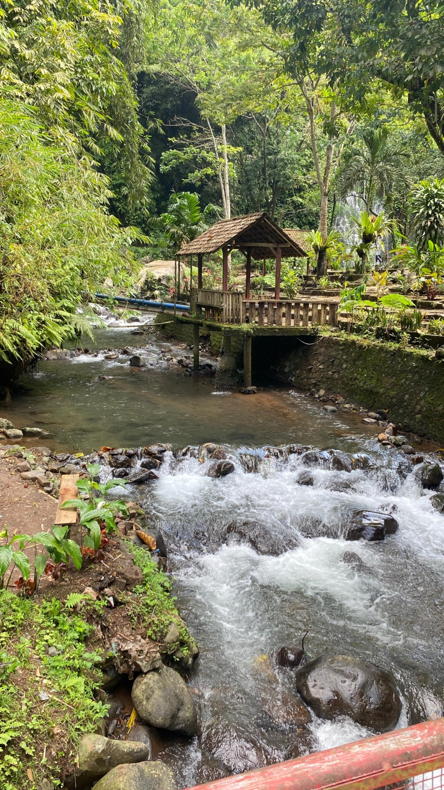
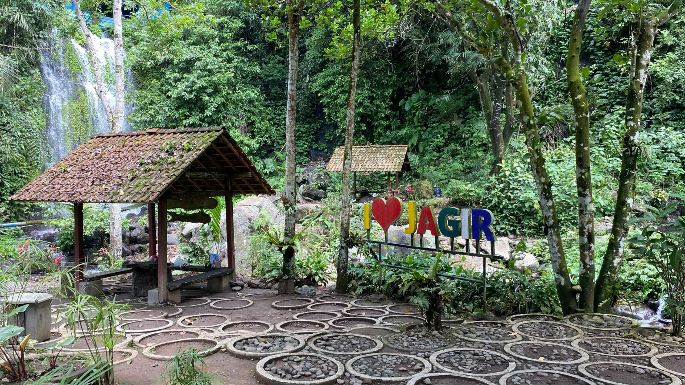

Dua Pesona Utama
Kombinasi luar biasa antara kesegaran mata air alami pegunungan dan suasana ala Lord of the Rings di bawah naungan pohon trembesi.
Jagir Waterfall
Tersembunyi di lereng bukit yang subur, Jagir Waterfall menyajikan kombinasi tiga aliran air terjun jernih yang berasal dari mata air pegunungan alami. Suasana yang sejuk dan tebing batu berbalut lumut tebal menjadikannya tempat ideal untuk relaksasi total.
- Mata Air Alami Pegunungan Air Terjun Kembar
- Jalur Trekking Ringan & Segar
De Djawatan Forest
Memasuki De Djawatan seolah melangkah ke dalam dunia dongeng. Hutan lindung ini dipenuhi puluhan pohon trembesi raksasa berusia puluhan tahun yang diselimuti tumbuhan paku epifit, menciptakan kanopi alami yang megah dan magis.
- Pohon Trembesi Raksasa 'Fangorn Forest'
- Spot Foto Cinematic & Dokar Keliling

Pengalaman Eksklusif
Sensasi yang dirancang untuk mereset pikiran dan mengabadikan kenangan terbaik.
Ketenangan Alam
Rasakan kesejukan memikat dari percikan air terjun dan udara segar bebas polusi di naungan pepohonan hijau.
Estetika Fotografi
Sudut pencahayaan alami (*ray of light*) di De Djawatan dan kontras tebing air terjun yang dramatis untuk foto visual berkelas.
Kenyamanan Perjalanan
Rencana perjalanan terstruktur satu hari (*One Day Trip*) yang efisien namun tetap memberikan waktu santai tanpa terburu-buru.
Momen Terabadikan
Cuplikan keindahan sudut-sudut destinasi yang menanti kedatangan Anda.



Tiket Eksposisi
One Day Trip Banyuwangi
Jagir & De Djawatan
Kelompok 2
XI ULW 1
SMKN 1 Banyuwangi
"A journey of a thousand miles begins with a single step into nature."
CLASS-XI-ULW1-2026